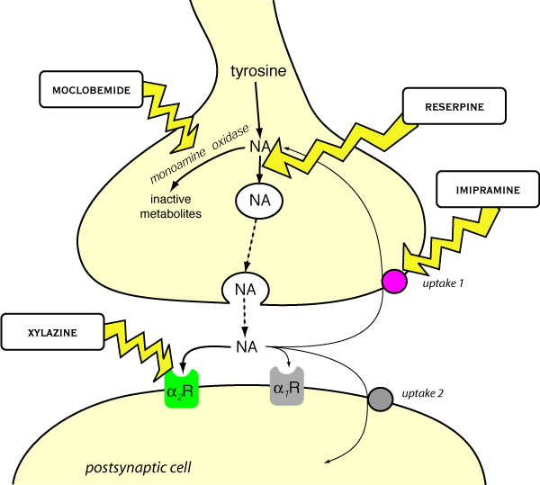

Noradrenaline is an important (mainly inhibitory) neurotransmitter, usually acting at postsynaptic β or α2 receptors (do not confuse with presynaptic α2 receptors in the periphery). Activation of α2 receptors always causes inhibition of the neurone they are on - if the neurone is presynaptic, as in the periphery, the effects can be excitatory. α2 receptors are important in alertness, sleep, blood pressure control and pain transmission; α2 agonists are widely used in veterinary medicine for their CNS effects (see under analgesics and sedatives). The endogenous ligand for many α2 receptors in the CNS may be agmatine rather than noradrenaline, agmatine also binds to imidazoline and NMDA receptors.
Noradrenergic transmission in the CNS.
5HT (serotonin) is widely used as a neurotransmitter but because
it acts at a large number of receptor subtypes (at least five different types
in the brain - which may be either inhibitory or excitatory, pre or postsynaptic)
its physiological role is not clear. 5HT neurones are concentrated in the pons
and medulla with diffuse connections up and down. It is thought to be important
for sleep, some sensory pathways, feeding behaviour, vomiting, mood, etc, etc.
Not many veterinary drugs interact with it directly, although the side effects
of some are mediated by 5HT.
In man, depression appears to be associated with a functional lack of noradrenaline
or 5HT or both. Depression is not recognised in animals, but antidepressant
drugs certainly alter animal behaviour and are often given empirically for this
reason. Noradrenaline and 5HT have their action terminated by reuptake into
the presynaptic neurone; most antidepressant drugs block this reuptake, eg the
tricyclic antidepressants. Monoamine oxidase inhibitors were used in the past
for the same purpose but have major side effects. Modern, reversible MAO inhibitors
such as moclobemide may be better. Some reuptake inhibitors are more specific
for noradrenaline (imipramine) or 5HT (fluoxetine) (or dopamine (selegiline))
but most will block the reuptake of all to some extent. Since these transmitters
are also important in the peripheral nervous system, antidepressants have many
side effects attributable to excess noradrenaline ± 5HT (some of the
older drugs have antimuscarinic effects as well).
Dopamine is a neurotransmitter as well as a precursor for noradrenaline.
It is involved in three important pathways; nigrostriatal pathway - important
in motor control; the mesolimbic pathway to the nucleus accumbens - the “reward
pathway” and the tuberoinfundibular pathway between the hypothalamus and
the pituitary. Problems with the nigrostriatal pathway lead to Parkinson’s
disease in people: this is not recognised in animals but can be induced by dopamine
antagonists (many classes of sedatives)! The reward pathway is very important
in drug addiction in people, but is probably involved in learning and possibly
food intake in animals too. The tuberoinfundibular pathway is important to maintain
pituitary secretion (dopamine inhibits pituitary hormone release) - drugs to
manipulate this are starting to be used in veterinary practice. Many hormones
involved in reproduction are under the control of pituitary derived releasing
hormones.
Dopamine also stimulates the chemoreceptor trigger zone to cause vomiting and
dopamine agonists are used as emetics.
Dopamine also acts at a large number of receptor subtypes but most known functions
are through the D2 subtype family.
Adrenaline is not thought to be very important as a neurotransmitter in the brain.